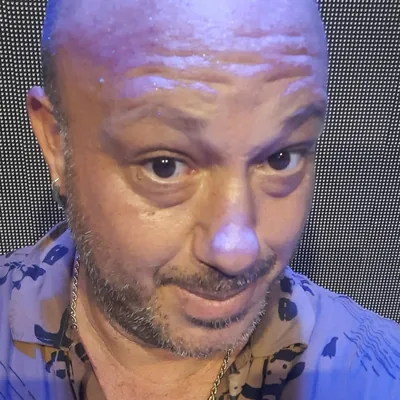

ניקול רודוי
שירה
זמרת ושחקנית. מופיעה בהפקות מוזיקליות, בפרויקטים אמנותיים ובמחזות זמר (״צלילי המוזיקה״, ״LEA״, מופעי קברט ועוד). בוגרת ״המסלול לתיאטרון ומחזות זמר״ ולהקה צבאית.
10 סיבובים ו-20 להיטים שכולם מכירים: להיט מהסבנטיז או מהאייטיז מול להיט מהניינטיז, באותו וייב. מצביעים מהטלפון, והתוצאה עולה מיד בטלפון של כל אחד מהקהל, גם בלי מסך. סולן וסולנית בפרונט, וכל האולם שר ורוקד.
מצביקה פיק, משינה וגזוז ועד אתניקס, הדורבנים ודנה אינטרנשיונל: שלושה עשורים של שירים שכל הארץ שרה, ועכשיו גם רוקדת.
בכל סיבוב להיט מהסבנטיז או מהאייטיז מול להיט מהניינטיז, באותו וייב. ארבע דוגמאות מתוך עשרה.
ועוד שישה סיבובים, עם "שלח לי מלאך", "על קו הזינוק", "חללית", "יעקב", "לגור איתו" ו"דיווה".
לא עוד ערב להיטים: כל שיר נלחם על הקול של הקהל, ובטלפון מחכה הסיפור שמאחוריו.
זמרת ושחקנית. מופיעה בהפקות מוזיקליות, בפרויקטים אמנותיים ובמחזות זמר (״צלילי המוזיקה״, ״LEA״, מופעי קברט ועוד). בוגרת ״המסלול לתיאטרון ומחזות זמר״ ולהקה צבאית.

בוגר בית הספר רימון. זמר בצמד ״רטרו״ לקבלות פנים ובלהקת המחווה ״טופ גאנז״. יוצר מחזות הזמר ״טריפ״ ו״עשן מעל המים״, ומפיק ויוזם הקונספט של Soundclash.
 ולאד פוזיילובגיטרה וקולות · ״הכל בגלל ג׳ני״
ולאד פוזיילובגיטרה וקולות · ״הכל בגלל ג׳ני״ חן ירמיצקיקלידים · הראסטיז
חן ירמיצקיקלידים · הראסטיז עומר מתתיהובס
עומר מתתיהובס
תומר כהןתופים · Honeybeeמשמאל: הקהל בהופעת הניינטיז בוונדרבר. מימין: האפליקציה של המסיבה הישראלית, מהכניסה ועד ההכרעה. צילומי הבמה והקהל מהופעת הניינטיז, והתוצאה מתוך הדגמה.
״החבר׳ה אצלנו עפו עליכם. קיבלתם פירגון עד השמיים.״
להיטים מקפיצים ומרקידים שמרימים את כל האולם. רוצים יותר? בונים את הערב מתוספות שאנחנו מביאים:


ההצעה נבנית לפי המקום, גודל הקהל והתוספות שתבחרו. ספרו לנו על האירוע ונחזור אליכם עם הצעת מחיר.
להרמת כוסית, כנס, או ערב עם תוכנית נוספת
חנוכה, ערב קהילה, במת חוץ או מסיבת חברה שהמופע הוא הלב שלה
הקהל שלכם הם הכוכבים. לאירוע השנתי, לערב הוקרה או לחגיגה שרוצים שתיזכר
רוצים את זה גם על מסך גדול? המופע עובד מצוין בלי מסך, והתוצאה עולה בטלפונים. אם יש מסך או מקרן, נוסיף סרטון אווירה מקורי לכל שיר, ואת ההצבעה והתוצאות על המסך הגדול.
כל סיבוב נגמר כשהקהל מכריע, והנקודות מצטברות עד ההכרזה.
שני הצדדים מוכרזים מהבמה, והקהל סורק קוד ונכנס לאפליקציית ההצבעה מהטלפון. בלי הורדה, בלי הרשמה.
הלהקה מנגנת שיר של צד אחד, ומיד אחריו שיר של הצד השני. ראש בראש, בביצוע חי ונאמן למקור.
ההצבעה פתוחה לאורך כל הסיבוב. בסופו יש ספירה לאחור של 20 שניות, והתוצאה נחשפת בזמן אמת.
הניקוד המצטבר קובע את הצד המנצח, ובין המצביעים מוגרלים פרסים.
את מערכת ההצבעות אנחנו מביאים ומפעילים מהבמה. זו אפליקציה שפיתחנו בעצמנו, והיא רצה על הטלפון של הקהל. אין מה להתקין באולם ואין ציוד שצריך להשיג: התוצאה עולה בטלפון של כל אחד מהקהל, ועל מסך המקום אם יש.
בלי מסך ובלי להוריד אפליקציה: סורקים QR, ובטלפון של כל אחד יש עובדה על כל שיר, אימוג׳ים בזמן השירים, הצבעה ותוצאה.


החליקו הצידה לעוד מסכים ←
לא. כל אחד בקהל רואה את ההצבעה והתוצאה בטלפון שלו. אם יש במקום מסך או מקרן, נוסיף סרטון אווירה מקורי לכל שיר ואת התוצאות על המסך הגדול. זו תוספת שמשדרגת את הערב, לא תנאי.
ההצבעה עובדת בכל טלפון עם קליטה בסיסית או עם ה-Wi-Fi של המקום. ואם הקליטה בכל זאת נופלת, הקרב ממשיך: הקהל מצביע בדגלונים בצבעי שני הצדדים, וההכרעה מוכרזת מהבמה. כך גם מי שבלי טלפון יודע מי ניצח.
לא. סורקים קוד ומצביעים מהדפדפן בטלפון, בלי הורדה ובלי הרשמה.
כמעט כלום. מי שרוצה כותב שם פרטי או כינוי, וכל מצביע מקבל מספר כרטיס אקראי. ההגרלה נעשית לפי מספר הכרטיס, והזוכה מראה את המסך שלו ללהקה. לא מבקשים טלפון, מייל או פרטים מזהים.
כן. המופע עובד באולם, בפארק ובבמה שכונתית, ואין צורך במסך. בהגברה, בתאורה ובאיש הסאונד אנחנו מתאימים את עצמנו למה שיש במקום, ואם חסר משהו, נביא.
כן. הגרסה של 45 דקות נבנתה בדיוק בשביל זה, ואת המופע המלא אפשר לחלק לשני חלקים סביב התוכנית שלכם.
המסיבה הישראלית כולה בעברית, והיא בנויה לקהל ישראלי. לצוות מעורב מתאים יותר סדרות נגד סרטים, שרוב השירים בו באנגלית, ויש לנו גם עמוד באנגלית.
הלהקה, האפליקציה והמנגנון כבר עולים על הבמות במופע הניינטיז, ומשם צילומי הקהל בעמוד. המסיבה הישראלית בנויה על אותה להקה ואותה אפליקציה, עם סטליסט ישראלי.
תגידו לנו תאריך, מקום וגודל קהל משוער, ונחזור אליכם עם הצעה.